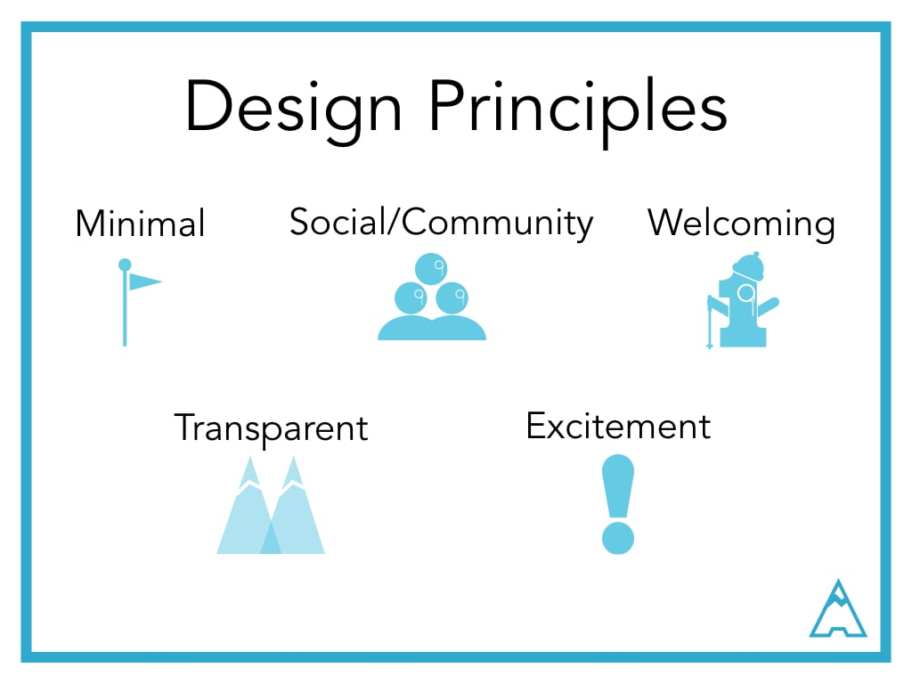

FAAMUS is a website that wants to make it easy to request personalized tweets from your favorite celebrities. My team and I redesigned the request process along with a responsive website in 2 ½ weeks.
Our Backstory
Brian came to us with the website, looking to improve the user experience by redesigning a mobile-first, user-centered design approach to the request process. Their analytics showed the lack of a mobile-friendly request and checkout process was holding back conversions. He also asked my team to explore the concept of using the platform at a live event, such as C2E2, to request a tweet instead of standing in line for an autograph or a drawing.
Getting Started
Our time with our client was short, so our team split the project into 3 user-centered design sprints. We had to move quickly, giving ourselves only four or five days per sprint.
Since our client said that the lack of a mobile-friendly request and checkout process was holding back conversions; I suggested we do a heuristic analysis of the request flow on both mobile and desktop before our first meeting with them.

Key Findings(Heuristic Analysis)
- The color red felt over-used, making it difficult for users to determine where to focus their attention.
- The first thing a person saw on the homepage were 2 log in buttons on the header image, as well as a quote that did not provide enough information on the functionality of the site.
- At first glance search box looks like the search button (especially on mobile).
- Feedback was not given for both after requesting a shoutout and when the tweet was sent out.
Competitive Analysis
We conducted a competitive analysis to see if there were opportunities for our client. We identified two different types of competitors, which opened up opportunities for our design process later.
Since our client said that the lack of a mobile-friendly request and checkout process was holding back conversions; I suggested we do a heuristic analysis of the request flow on both mobile and desktop before our first meeting with them.
Research
One of the first things we did was conduct a competitive analysis to see what types of crowdfunding investing platforms were available as well as indirect crowdfunding platforms for inspiration.
Even after we completed the competitive and domain analysis, we were all relatively new to investing, startup funding rounds and equity investing realms were foreign concepts to my team. So we interviewed and had surveyed several SMEs within the crowdfunding, startup, and investment realms to get some expert opinions on the legislation:


We needed to synthesize our interview data, so our team took to affinity diagramming:
After our research, I synthesized both the survey and interview to form a general idea of our users’ behaviors, needs, and archetypes would be. From there, I worked on the journey map of what a startup’s funding process would look like before the legislation:
While I worked on the journey map, the rest of the team worked on creating the site-map.
Define
Now that we understood the rest of the data, we had our most important question: who are our users? From our interview data, we created our 2 primary users:
During this stage we decided to focus solely on the investor’s side because we felt there was more opportunity in this space and came up with this problem statement:
"Novice INVESTORS are CONFUSED and INTIMIDATED by the startup investment process, often preventing them from actually investing, but have the MONEY and WILLINGNESS to support companies that they believe in."
To address our user’s problem, we formed these design principles:
Ideate & Learn
We broke into teams of two to quickly produce 2 concepts:
- One concept focused on gamifying the experience, which encouraged users to return more often to the website
- The other developed a more social feature including in-person and virtual meetups and the ability to communicate with the startups.
My group worked on the gamification concept wireframes. I worked on wireframing & prototyping the gamification version with my partner Joel. We wanted both sides to be engaged, so we allowed investors to be awarded badges for certain actions and visually see how close their invested startups were to their funding goal with mountains.
Gamification Concept:


Meetup Concept:


Refining & Results
In the end, after evaluating all of the research including a satisfaction survey, results showed that users liked both ideas but from the interviews, but seemed more excited about the gamification option. We decided to include the parts of the virtual meet up app into the gamification version to try and appeal even more to our target demographic.
Branding
Despite not working on the branding of our product, I consulted on UI elements with Lainey, our UI Designer.
Final Wireframes
While the branding of the site was being worked on, the rest of our team took to refining our wireframes. Of these, I designed the onboarding, product page as well as responsive screens for the home and product page.